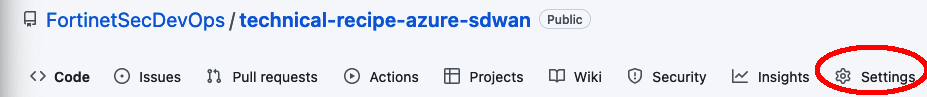
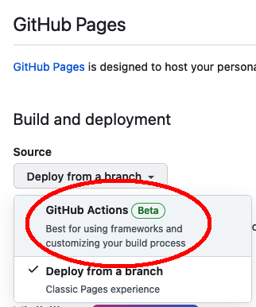
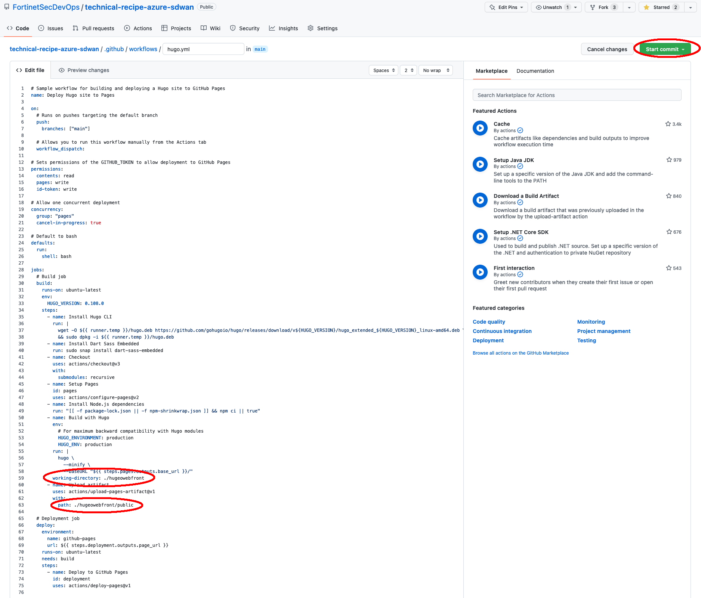
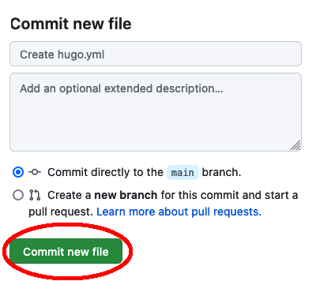

Task 3 - Create GitHub action for Hugo Publish
Warning
You must have proper repo permissions to setup a GitHub action. If you do not see the settings button on the top repo banner/ribbon, please reach out to the repo owner to get the proper permissions
- In your web browser, navigate to the GitHub repo and click on Settings in the top ribbon 
- On the left hand nav bar, click on Pages

- Under Source select GitHub Actions 
- Click Browse All Workflows

- Search for Hugo and then click Configure under the Hugo GitHub Actions

- You’ll see a hugo.yml file created, which directs GitHubActions to execute a Hugo Build Command anytime the repo is updated. We need to make 1 minor adjustment to this file. B/c we located our hugo content underneath the repo root, we need to tell hugo where it needs to build and publish. Once updated per your folder naming in the spots shown below, click Start Commit
Specifically, you want to add a working-directory under the jobs: –> build: –> steps: section and then update the Upload Artifact path. You can copy and paste this entire script into your hugo.yml file, or just edit the specific lines for working directory (in the bottom 1/3 of the file)
# Sample workflow for building and deploying a Hugo site to GitHub Pages
name: Deploy Hugo site to Pages
on:
# Runs on pushes targeting the default branch
push:
branches: ["main"]
# Allows you to run this workflow manually from the Actions tab
workflow_dispatch:
# Sets permissions of the GITHUB_TOKEN to allow deployment to GitHub Pages
permissions:
contents: read
pages: write
id-token: write
# Allow one concurrent deployment
concurrency:
group: "pages"
cancel-in-progress: true
# Default to bash
defaults:
run:
shell: bash
jobs:
# Build job
build:
runs-on: ubuntu-latest
env:
HUGO_VERSION: 0.108.0
steps:
- name: Install Hugo CLI
run: |
wget -O ${{ runner.temp }}/hugo.deb https://github.com/gohugoio/hugo/releases/download/v${HUGO_VERSION}/hugo_extended_${HUGO_VERSION}_linux-amd64.deb \
&& sudo dpkg -i ${{ runner.temp }}/hugo.deb
- name: Install Dart Sass Embedded
run: sudo snap install dart-sass-embedded
- name: Checkout
uses: actions/checkout@v3
with:
submodules: recursive
- name: Setup Pages
id: pages
uses: actions/configure-pages@v2
- name: Install Node.js dependencies
run: "[[ -f package-lock.json || -f npm-shrinkwrap.json ]] && npm ci || true"
- name: Build with Hugo
env:
# For maximum backward compatibility with Hugo modules
HUGO_ENVIRONMENT: production
HUGO_ENV: production
run: |
hugo \
--minify \
--baseURL "${{ steps.pages.outputs.base_url }}/"
working-directory: ./hugeowebfront
- name: Upload artifact
uses: actions/upload-pages-artifact@v1
with:
path: ./hugeowebfront/public
# Deployment job
deploy:
environment:
name: github-pages
url: ${{ steps.deployment.outputs.page_url }}
runs-on: ubuntu-latest
needs: build
steps:
- name: Deploy to GitHub Pages
id: deployment
uses: actions/deploy-pages@v1

7. Click to Commit new file

8. You’ll see the new GitHub action file hugo.yml created in the .github/workflows folder of the repo. You can review the action to see results of the build